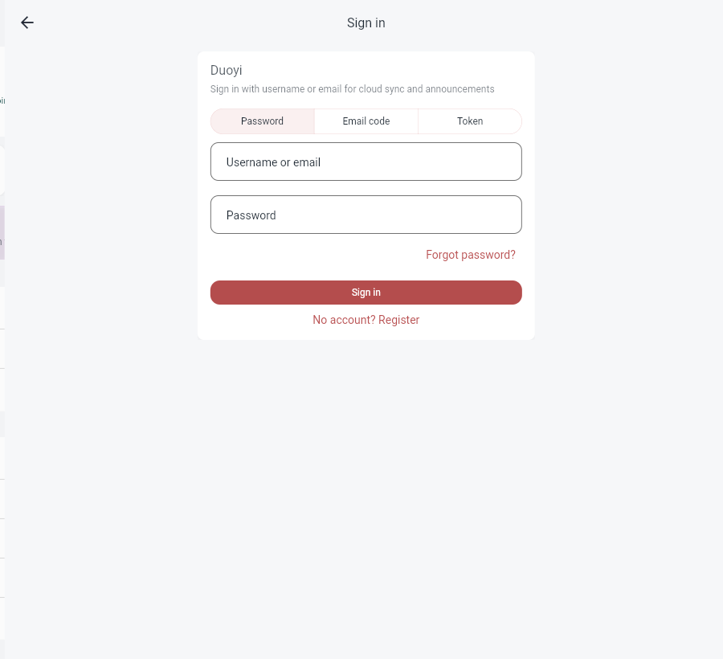
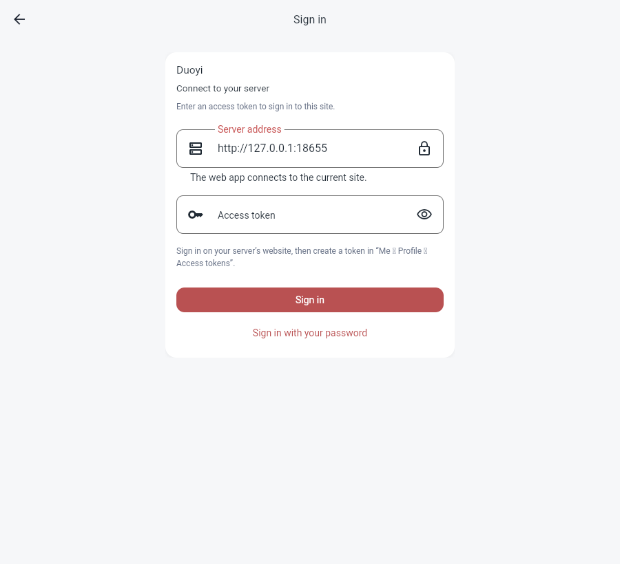

<!doctype html>
<html lang="zh-CN"><meta charset="utf-8"><meta name="viewport" content="width=device-width, initial-scale=1"><title>Web 访问令牌登录</title>
<style>body{margin:0;background:#f6f7f9;color:#1f2933;font:16px/1.6 system-ui,sans-serif}main{max-width:1040px;margin:auto;padding:28px}h1{font-size:24px;font-weight:400}h2{font-size:18px;font-weight:400;margin-top:28px}p{color:#667085}a{color:#a94444}img{display:block;max-width:100%;height:auto;border:1px solid #d9e0e8;border-radius:12px}</style>
<main><h1>Web 登录已增加“令牌”选项</h1><p>密码、邮箱验证码和令牌登录均连接当前站点。Web 令牌表单显示并锁定当前服务器地址，安装端仍可编辑服务器。</p><p><a href="http://127.0.0.1:18655/?preview=web-token-v2">打开本地应用</a></p><h2>三个登录选项</h2><a href="login-options.png"></a><h2>Web 令牌登录表单</h2><a href="token-form.png"></a></main></html>
